▲ 향일암 경내에서 본 남해 전망. 촬영 시기는 확인하지 못했다. 사진=Smiley.toerist(위키미디어 커먼스, CC BY-SA 4.0)
"향일암 일출, 10월 31일엔 몇 시에 뜰까?" 한국천문연구원 해/달 출몰시각 계산기의 계산식을 향일암 좌표(동경 127.80도, 북위 34.59도)에 넣어 돌려 보니 10월 31일(토)은 일출 06:47, 시민박명 시작 06:21이다. 11월 30일이면 일출이 07:16으로 늦어진다. 입장료는 더 복잡하다. 향일암 누리집은 어른 2,500원을 안내하고, 여수시 관광 누리집과 한국관광공사 TourAPI는 무료라고 적는다. 이 글은 2026년 10월 12일에 향일암 누리집, 여수시 관광 누리집, 한국관광공사 TourAPI를 직접 열어 확인한 값만 정리했다. 올해 공사·통제 공지와 일출제 일정처럼 공식 자료를 찾지 못한 항목은 "확인하지 못했다"고 적었다.
💡 먼저 결론
향일암은 TourAPI 기준 05:00~19:00 연중무휴다. 입장료는 공식 자료끼리 어긋나므로 현금 2,500원을 챙기고 가는 편이 안전하다(카프리즘 판단). 올해 가을 향일암 출입을 막는 공사·통제 공지는 사찰 공지사항에서 확인하지 못했고, 여수시가 향일암 공영주차장(타워) 보수공사를 6월 17일 입찰 공고한 사실만 확인했다. 향일암 찾아오시는 길 바로가기
1. 한눈에 보기 — 확인한 것과 확인하지 못한 것
향일암은 여수 돌산도 남쪽 끝 금오산 자락에 있는 대한불교조계종 제19교구 말사다. TourAPI 소개는 "연간 100만여 명이 찾는 관광명소이자 관음기도 도량"이라고 적는다. 방문 전에 필요한 값을 한 표로 묶었다.
| 항목 | 확인된 값 | 출처·상태 |
|---|---|---|
| 개방 시간 | 05:00~19:00, 연중무휴 | TourAPI(수정일 2026-06-30) |
| 일출(10월 31일) | 06:47(시민박명 06:21) | 한국천문연구원 계산식으로 산출한 값 |
| 입장료 | 자료마다 다름: 사찰 누리집 어른 2,500원 / 여수시·TourAPI 무료 | 아래 3장에서 근거 비교 |
| 주차 | 가능. 소형 최초 1시간 무료, 초과 10분 200원, 1일 최대 5,000원(외부 사이트 표기) | TourAPI는 '가능'만 표기. 요금은 현장 확인 |
| 오르는 길 | 계단 291개(2016년 보도), 금오산 정상까지 30분(여수시) | 공식 소요 시간 확인 못 함 |
| 올해 공사·통제 | 출입 제한 공지 확인하지 못함. 공영주차장(타워) 보수공사 입찰 공고(2026-06-17)만 확인 | 사찰 공지사항 41건 열람 |
| 일출제 | 제30회(2025-12-31~2026-01-01)는 종료. 올해 연말 행사는 확인하지 못함 | 여수시 관광 누리집 |
| 문의 | 사찰 종무소 061-644-4742 | 사찰 누리집·TourAPI |
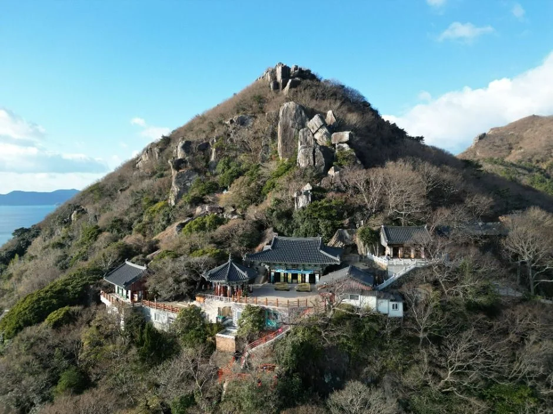
▲ 향일암 전경(한국관광공사 제공). 촬영 시기와 계절은 확인하지 못했다. 사진=한국관광공사
2. 일출 시각 — 10월 12일 06:31, 11월 30일 07:16
한국천문연구원 해/달 출몰시각 페이지는 날짜와 위치를 넣으면 일출·일몰·시민박명 시각을 계산해 주는데, 브라우저에서 돌아가는 계산식(JavaScript)이 공개돼 있다. 이 식에 향일암 좌표(TourAPI 기준 동경 127.8036도, 북위 34.5916도)를 넣어 구했다. 같은 식으로 지난 연말 값을 돌려 보면 2025년 12월 31일 일몰 17:27, 2026년 1월 1일 일출 07:35가 나온다. 여수시 누리집이 일출제 안내에 적은 일출 07:36(예정), 일몰 17:28과 1분씩 차이가 난다. 계산기가 분 미만을 버리기 때문으로 보이며, 실제 표기와 1분 정도 어긋날 수 있다. 산이나 수평선 구름 때문에 해가 눈에 보이는 시각은 계산값과 다르다.
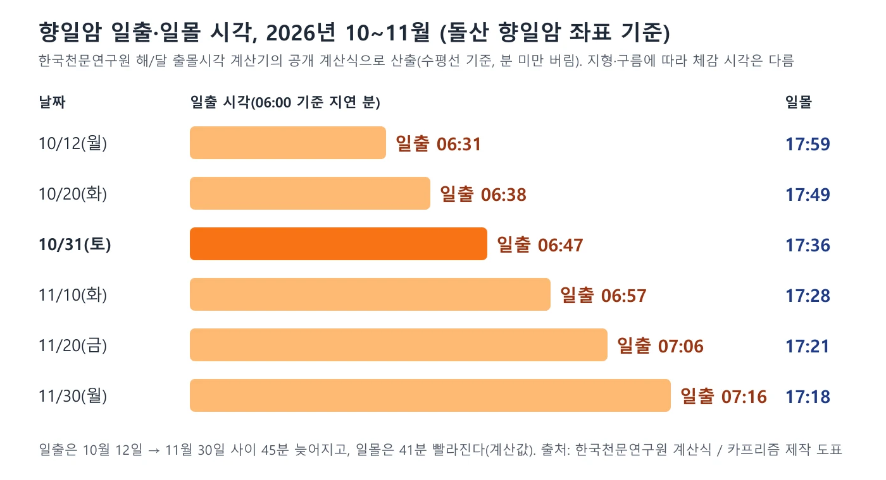
▲ 향일암 좌표 기준 일출·일몰 계산값. 사진=카프리즘 제작
| 날짜 | 시민박명 시작 | 일출 | 일몰 | 10월 12일 대비 |
|---|---|---|---|---|
| 10월 12일(월) | 06:06 | 06:31 | 17:59 | 기준일 |
| 10월 20일(화) | 06:12 | 06:38 | 17:49 | 일출 7분↑, 일몰 10분↓ |
| 10월 31일(토) | 06:21 | 06:47 | 17:36 | 일출 16분↑, 일몰 23분↓ |
| 11월 10일(화) | 06:30 | 06:57 | 17:28 | 일출 26분↑, 일몰 31분↓ |
| 11월 20일(금) | 06:39 | 07:06 | 17:21 | 일출 35분↑, 일몰 38분↓ |
| 11월 30일(월) | 06:48 | 07:16 | 17:18 | 일출 45분↑, 일몰 41분↓ |
일몰은 10월 31일 17:36인데 향일암 개방은 19:00까지다. 해 질 무렵에 올라가면 어두워지기 전에 내려와야 하고, 계단에 조명이 충분한지는 공식 자료로 확인하지 못했다. 일출을 보려는 경우 개방이 05:00부터이므로, 일출 06:47 기준으로는 시민박명(06:21) 전에 올라가 자리를 잡는 일정이 현실적이다(카프리즘 판단, 공식 권장 시각은 확인하지 못했다).
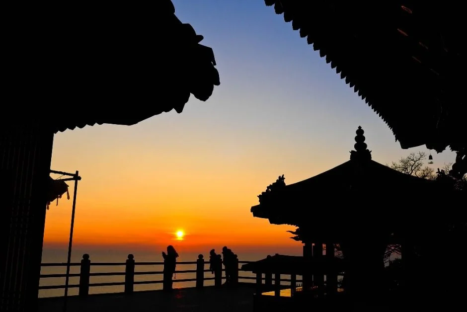
▲ 향일암에서 본 일출 장면. 촬영 일자는 확인하지 못했다. 사진=한국관광공사
3. 입장료·개방·주차 — 공식 자료끼리 어긋난다
향일암 입장료는 이번 조사에서 가장 엇갈린 항목이다. 사찰 누리집 '찾아오시는 길' 페이지에는 입장료 표가 있고, 여수시와 한국관광공사 자료에는 무료로 적혀 있다. 2026년 3월 31일자 위키트리 기사도 "현재 향일암의 입장료는 무료"라고 썼다. 사찰 표를 폐지했다는 공지는 찾지 못했고, 어느 쪽이 최신인지 가리지 못해 둘 다 적는다. 반대로 사찰 누리집은 "개인 어른 2,500원"을 안내한다. 이 표가 언제 마지막으로 수정됐는지는 페이지에서 확인하지 못했다.
| 출처 | 안내 내용 | 비고 |
|---|---|---|
| 향일암 누리집(찾아오시는 길) | 개인: 어른 2,500원, 군경·청소년 1,500원, 어린이 1,000원 / 단체: 어른 2,500원, 군경·청소년 1,200원, 어린이 800원. 만 70세 이상·국가유공자·장애인(1인)·미취학 어린이 무료 | 수정일 확인 못 함(누리집 하단 저작권 표기 2019) |
| 여수시 관광 누리집 | 이용요금 무료, 연중무휴, 주차장 있음 | 전화번호 061-644-4742(사찰 번호) 표기 |
| 한국관광공사 TourAPI | 입장료 무료(detailInfo2), 이용시간 05:00~19:00, 주차 가능 | contentId 127715, 수정일 2026-06-30 |
| 위키트리 기사(2026-03-31) | '입장료는 무료' | 언론 보도, 공식 자료는 아님 |
✅ 입장료는 이렇게 준비하자
공식 자료가 갈리는 만큼 현장에서 무료일 수도, 매표소가 있을 수도 있다. 사찰 누리집 표에 따르면 어른 2명·청소년 1명이면 6,500원이고, 만 70세 이상·미취학 어린이는 무료다. 방문 전 사찰 종무소(061-644-4742)에 전화로 확인하는 것이 가장 확실하다. 입장료 안내 페이지 바로가기
주차는 TourAPI에 "가능"으로만 표기돼 있다. 대한민국 구석구석의 정보를 옮긴 외부 관광 사이트(ktriptips.com)에는 소형 최초 1시간 무료, 초과 10분마다 200원, 1일 최대 5,000원, 대형 초과 10분마다 300원·1일 최대 8,000원, 점심시간 12:00~14:00 무료 추가로 적혀 있다. 여수시와 사찰 누리집에서 같은 요금표는 찾지 못했으므로 요금은 현장 안내판으로 확인하자. 사찰은 누리집에서 문화재 접촉·음식물 반입·상업적 사진 촬영(SNS·유튜브 포함)·노점 상행위를 금지하고, 전 구역을 금연으로 안내한다.
| 상황 | 입장료 | 주차 | 합계 |
|---|---|---|---|
| 성인 2명, 1시간 이내 | 5,000원(사찰 표 기준) | 무료 | 5,000원 |
| 성인 2명, 2시간 체류 | 5,000원 | 1,200원(1시간 초과분 60분, 10분당 200원 6구간) | 6,200원 |
| 성인 2명, 하루 종일 | 5,000원 | 최대 5,000원 | 10,000원 |
| 입장료가 무료일 때(여수시·TourAPI 기준) | 0원 | 위와 같음 | 0~5,000원 |
위 표의 주차비는 외부 사이트 요금표로 계산한 값이며, 공식 요금이 바뀌었다면 달라진다. 점심시간 무료 추가분은 계산에서 제외했다.
4. 오르는 길 — 계단 291개와 금오산 코스
향일암은 주차장에서 내려 계단과 바위 사이 통로를 따라 오르는 사찰이다. 경북매일 2016년 1월 8일자 기사는 "291개의 계단을 밟으며 가파른 바위산을 오른다"고 적었고, 위키트리 2026년 3월 31일자 기사는 돌계단 경사가 40도에 가깝다고 전한다. 다만 이 계단 수는 언론 보도 기준이고, 향일암·여수시 공식 자료에는 계단 수와 소요 시간이 없다. 주지스님 인사말은 노약자와 장애인을 위해 계단 턱을 낮추고 탐방로를 정비했다고 밝혔지만 정비 시기는 적혀 있지 않다.
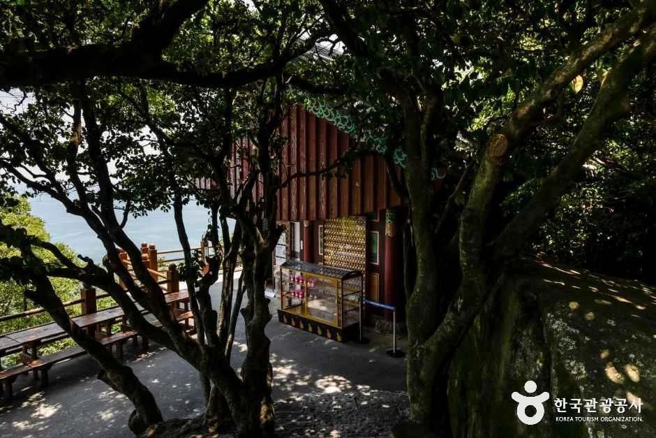
▲ 향일암 외부 길목(한국관광공사 제목 '향일암 외부'). 촬영 시기는 확인하지 못했다. 사진=한국관광공사
향일암은 백악기 안산암질 용암돔이 식어 굳은 지형 위에 자리한다. 여수시 지질명소 안내는 절 마당 곳곳에서 거북 등껍질 모양 다각형 절리와 주상절리를 볼 수 있다고 소개한다. 여수시 향일암 안내는 "커다란 돌들이 입구가 되기도 하고, 기둥이 되기도 한다"며 키 큰 사람은 고개를 숙여 지나야 하는 석문을 특징으로 든다.
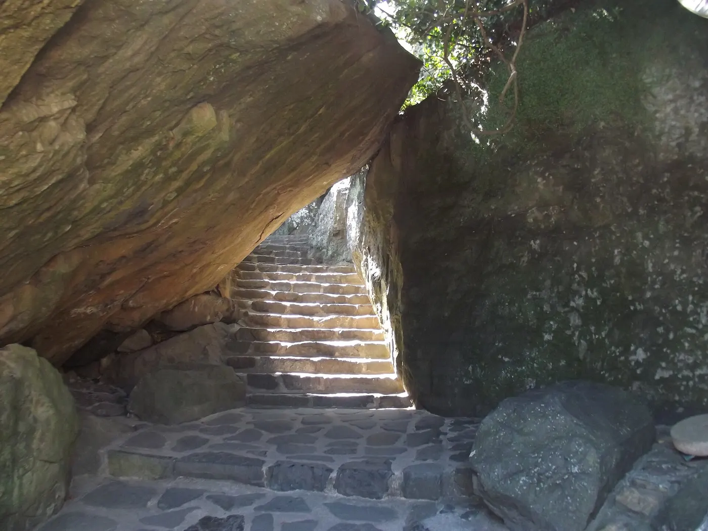
▲ 향일암 바위 사이 돌계단 통로(위키미디어 커먼스 'Passage stairway in Hyangilam'). 촬영 시기는 확인하지 못했다. 사진=Smiley.toerist(CC BY-SA 4.0)
| 코스 | 구간 | 소요 시간(여수시 표기) |
|---|---|---|
| 1코스 | 향일암 → 금오산 정상 | 30분 남짓 |
| 2코스 | 성두주차장 출발 → 금오산 정상 → 향일암 쪽 하산 | 1시간 20분 정도 |
| 3코스 | 성두마을 → 금오산 정상 | 2시간 30분 |
| 4코스 | 죽포 봉림마을 → 봉황산 → 성두주차장 → 금오산 정상 | 4시간 정도 |
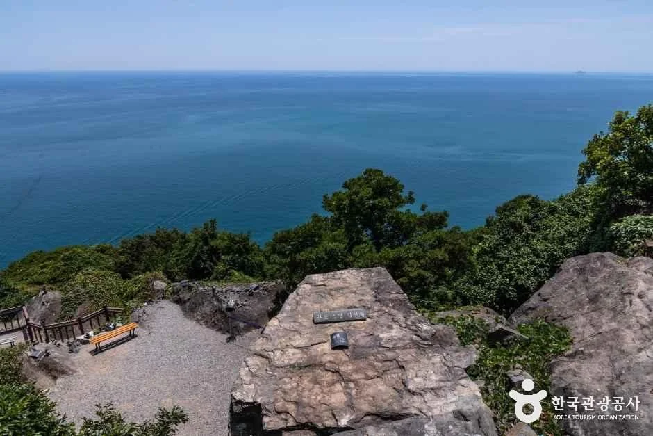
▲ 향일암 일대 바위 능선과 남해 수평선(한국관광공사 제공). 촬영 시기는 확인하지 못했다. 사진=한국관광공사
TourAPI에는 별도로 '향일암 해안길' 항목이 있다. 향일암에서 시작해 돌산향교를 지나 향일암과 죽포를 잇는 등산로까지 이어지는 해안로로 소개되며, 일몰도 볼 수 있는 곳이라고 설명한다. 이 길의 총 거리와 소요 시간은 확인하지 못했다.
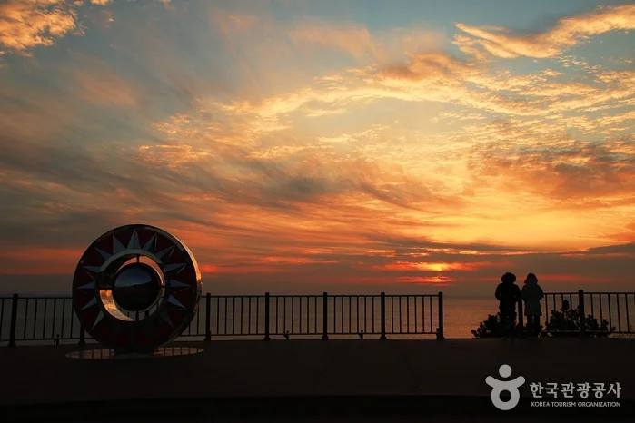
▲ 향일암 해안길 일몰 장면(한국관광공사 제공). 촬영 일자는 확인하지 못했다. 사진=한국관광공사
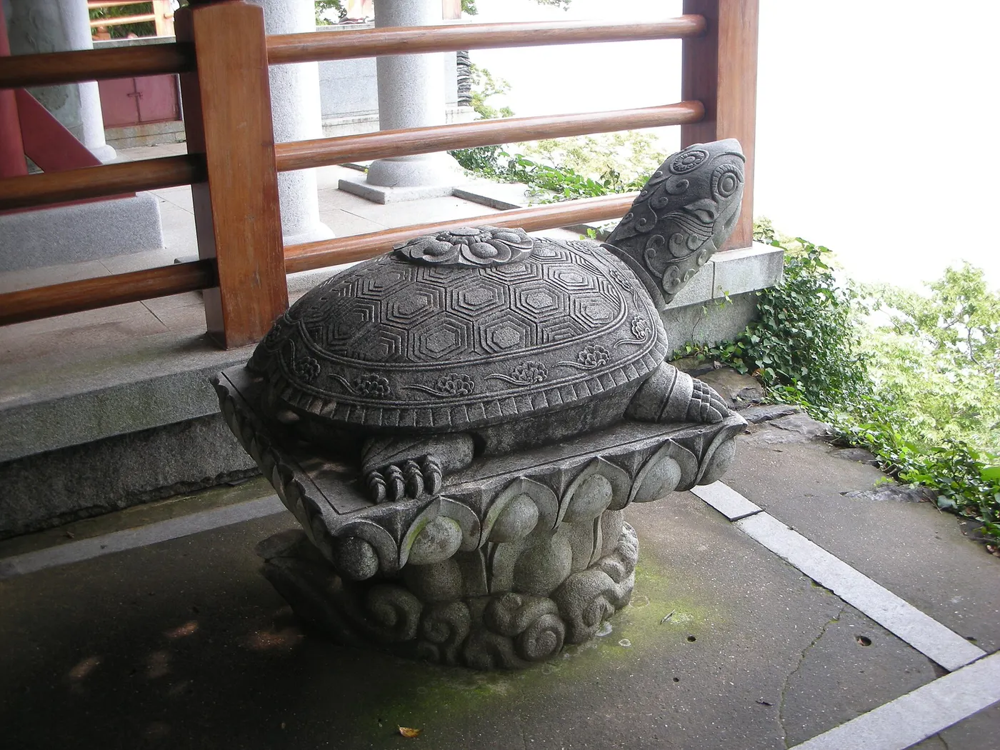
▲ 향일암의 돌 거북 조각상(위키미디어 커먼스 'Hyangilam 10'). 촬영 시기는 확인하지 못했다. 사진=JayHyuck Shin(CC BY-SA 2.0)
5. 재건·공사·통제 — 확인한 것과 확인하지 못한 것
"향일암 재건"은 2009년 화재 이야기다. TourAPI 소개는 2009년 12월 20일 화재로 소실된 대웅전(원통보전)·종무소(영구암)·종각을 2012년 5월 6일 복원해 낙성식을 가졌다고 적는다. 여수시 안내도 같은 화재와 재건을 언급한다. 이번 조사에서 확인한 올해 관련 소식은 아래와 같다.
| 항목 | 확인 내용 | 판단 |
|---|---|---|
| 대웅전 재건 | 2012년 5월 6일 복원 완료(TourAPI). 올해 재건 공사 소식 없음 | 올해 진행 중인 재건 공사는 확인하지 못함 |
| 사찰 공지사항 | 목록 41건 중 최신 글이 2026-03-11(연등 접수). 출입 제한·휴관 공지 없음 | 통제 공지 확인하지 못함 |
| 불사(중창) 모연 | 사찰 누리집이 관음전 중창 불사 동참을 안내하고, 2025-10-10 공지에 '해수 관음전 불사 모연' | 시주 안내이며 출입 제한 문구는 없음 |
| 공영주차장(타워) | 여수시가 '공영주차장(타워) 시설물 정밀안전점검에 따른 보수공사(향일암)'를 2026-06-17 공고(공고번호 R26BK01587081-000), 추정가격 1억 3,520만 원, 2026-06-23 개찰, 영만기업(주) 낙찰 132,171,470원(낙찰율 97.76%)(입찰 정보 사이트 표기) | 공사 기간·주차 제한은 확인하지 못함. 여수시·나라장터 원문은 직접 열지 못하고 입찰 정보 사이트 한 곳 기준 |
| 도로 통제 | 돌산읍 향일암로 통제 공고는 찾지 못함 | 확인하지 못함 |
⚠️ 주차장 보수공사는 방문 전 전화 확인
입찰 공고 정보(입찰 정보 사이트 목록)만 확인한 것이어서, 가을 성수기에 타워 주차장을 얼마나 쓸 수 있는지는 알 수 없다. 주차장 이용 여부는 사찰 종무소(061-644-4742)나 여수시 콜센터 1899-2012에 문의하자.
6. 돌산공원·돌산대교·거북선대교 — 향일암 가는 길의 볼거리
향일암은 돌산도 남쪽 끝이고, 여수 시내에서 가려면 돌산대교나 거북선대교를 건너야 한다. 향일암 누리집 길 안내도 "17번 국도 → 거북선대교(23km) → 향일암"으로 표기한다. 이 두 다리와 돌산공원이 가는 길의 첫 볼거리다. 돌산공원의 주차·야경 요금은 돌산공원·오동도 주차 1시간 무료 기사에서 다뤘으므로 여기서는 향일암과 묶는 동선 중심으로 정리한다.
| 장소 | 핵심 정보 | 출처 |
|---|---|---|
| 돌산공원 | 1987년 조성, 약 87,000평. 상시 개방·연중무휴. 주차 소형 150대·대형 15대. 돌산대교 일몰·야경 조망 | TourAPI(수정 2026-08-05), 문의 061-659-4628 |
| 돌산대교 | 길이 450m, 너비 11.7m, 높이 62m. 1980년 12월 착공, 1984년 12월 15일 준공. 2000년 10월 경관 조명 설치(8개 프로그램) | 여수시 관광 누리집 |
| 거북선대교 | 콘크리트 사장교, 주탑 높이 90m, 경간 230m, 교량 연장 744m(터널 490m·접속도로 706m 포함 1.94km). 별칭 제2돌산대교 | 여수시 관광 누리집 |
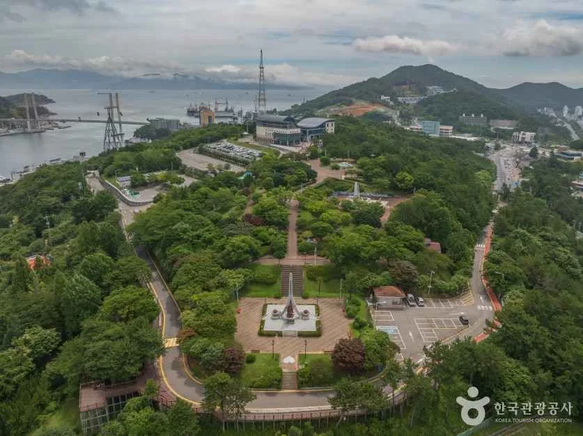
▲ 돌산공원 전경(한국관광공사 제공). 촬영 시기는 확인하지 못했다. 사진=한국관광공사
돌산대교는 여수시 안내에 따르면 돌산공원 조성과 향일암이 전국적인 일출 명소로 알려지는 계기가 된 다리다. 1984년 준공 전에는 돌산 주민이 생활과 교육을 선박에 의존해야 했다. 거북선대교는 돌산 진입로가 한 곳뿐이어서 주말마다 겪던 교통 체증을 풀어 준 다리로 소개된다.
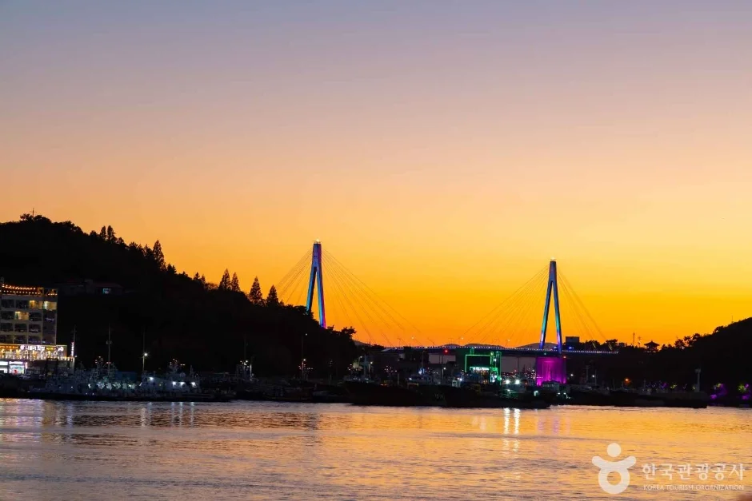
▲ 돌산대교 일원 노을 장면(한국관광공사 제목 '돌산대교'). 촬영 시기는 확인하지 못했다. 사진=한국관광공사
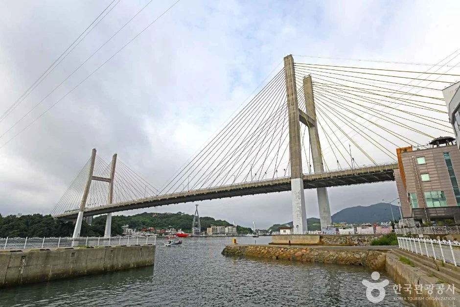
▲ 거북선대교 전경(한국관광공사 제공). 촬영 시기는 확인하지 못했다. 사진=한국관광공사
7. 하루 동선 — 향일암 일출 후 돌산공원 일몰까지
향일암은 05:00에 열고, 돌산공원은 상시 개방이다. 10월 31일(토) 계산값을 기준으로 하루 동선을 짜면 아래와 같다. 이동 시간은 공식 자료가 없어 적지 않았다.
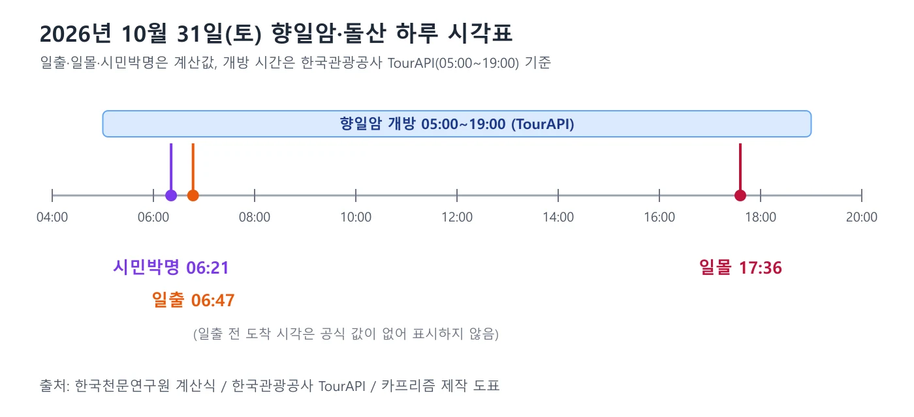
▲ 2026년 10월 31일 기준 향일암 개방 시간과 일출·일몰 시각. 사진=카프리즘 제작
| 시각(계산값) | 할 일 | 근거·메모 |
|---|---|---|
| 06:21 | 시민박명 시작. 향일암 일출 대기 | 개방 05:00 이후 입장(TourAPI) |
| 06:47 | 일출 | 한국천문연구원 계산식, 구름에 따라 체감 시각 다름 |
| 오전 | 금오산 정상(1코스 30분 남짓) 또는 향일암 해안길 | 여수시 안내 소요 시간 |
| 점심 | 돌산 일대 식사 | 돌산갓은 갓김치의 대명사로 알려져 있다(여수시 안내) |
| 오후 | 거북선대교·돌산대교 건너 돌산공원 | 돌산공원 상시 개방, 주차 1시간 무료(기존 기사) |
| 17:36 | 일몰 후 돌산대교 야경 | 향일암 좌표 일몰 17:36(돌산공원도 같은 분 단위) |
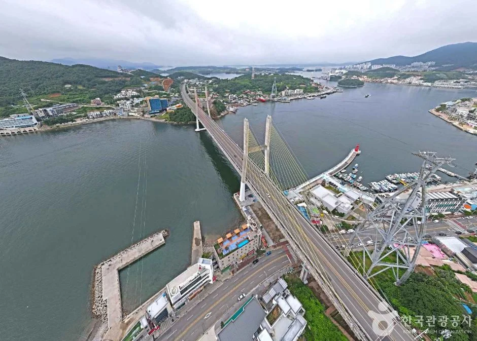
▲ 거북선대교 일원 항공 사진(한국관광공사 제공). 촬영 시기는 확인하지 못했다. 사진=한국관광공사
향일암·돌산 일대를 하루에 묶을 때 오동도까지 넣고 싶다면 돌산공원·오동도 주차 기사로 주차 순서를 정하자. 걷는 시간이 긴 금오도 비렁길은 금오도 비렁길 기사에서 다뤘다. 여수시 낭만버스 제1코스(향일암코스)는 여수시 관광 누리집에 소요 시간 6시간 50분, 매월 둘째 주 월요일 휴무로 소개돼 있다. 2026년 10월의 둘째 월요일은 오늘(12일)이다. 예약·문의는 보람고속관광여행사 061-902-0212(누리집 표기)이며, 올해 운행 여부와 요금은 확인하지 못했다.
8. 가는 길 — 향일암 누리집 안내 그대로
향일암 누리집은 주소를 전남 여수시 돌산읍 향일암로 1로, 승용차 경로를 아래처럼 적는다. 대중교통 안내는 같은 페이지의 탭에 있으나 이번 조사에서 내용을 확인하지 못했다.
| 출발지 | 경로 |
|---|---|
| 서울 | 경부고속도로 88.4km → 논산천안고속도로 82.7km → 순천완주고속도로 117.5km → 17번 국도 37km → 거북선대교 23km → 향일암 |
| 부산 | 남해제2고속도로지선 20.4km → 남해제1고속도로지선 19.5km → 남해고속도로 87.9km → 17번 국도 37km → 거북선대교 23km → 향일암 |
| 대구 | 중부내륙고속도로지선 25.5km → 중부내륙고속도로 46.0km → 남해고속도로 92.9km → 17번 국도 37km → 거북선대교 23km → 향일암 |
| 광주 | 호남고속도로 80.0km → 17번 국도 37km → 거북선대교 23km → 향일암 |
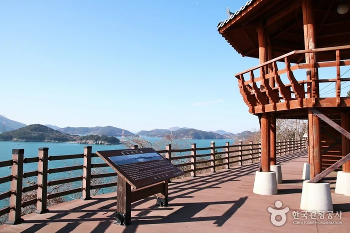
▲ 향일암 해안길 일대 전망 데크(한국관광공사 제공). 촬영 시기는 확인하지 못했다. 사진=한국관광공사
9. 연말 일출제 — 올해 일정은 확인하지 못했다
여수시 관광 누리집의 행사안내는 제30회 여수향일암일출제를 2025년 12월 31일(수)~2026년 1월 1일(목), 돌산읍 임포마을(향일암) 일원에서 연다고 소개했다. 개막식은 12월 31일 23:00, 일출은 1월 1일 07:36(예정)이었고 주요 행사는 제야의 종 타종, 신년 불꽃쇼, 일출 감상, 체험행사였다. 올해(2026년 12월 31일~2027년 1월 1일) 제31회 개최 여부와 일정은 여수시 누리집에서 확인하지 못했다. 같은 계산식으로 구한 2027년 1월 1일 향일암 일출은 07:35다.
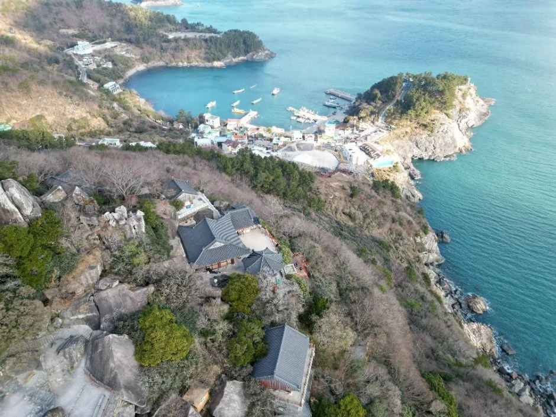
▲ 향일암 일대 해안 항공 사진(한국관광공사 제공). 촬영 시기는 확인하지 못했다. 사진=한국관광공사
10. 같은 권역 기사와 이 글의 차이
카프리즘에는 여수 기사가 이미 세 편 있다. 돌산공원·오동도 주차 기사는 두 곳의 주차 요금과 야경 시각을 다뤘고, 금오도 비렁길 기사는 섬 해안절벽 걷기, 세계섬박람회 셔틀·주차 기사는 박람회 이동 방법을 정리했다. 향일암 자체를 다룬 기사는 없었다. 이 글은 향일암 일출 시각, 입장료 안내 불일치, 올해 공사 공지 확인 결과, 돌산 연륙교 조합 동선에 집중했다.
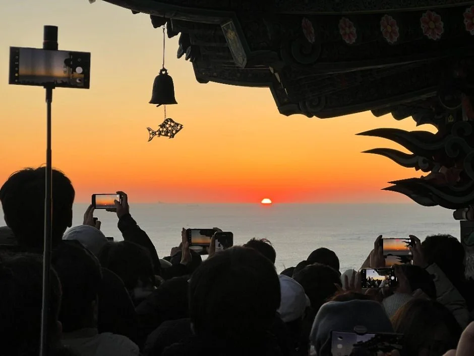
▲ 일출을 기다리는 방문객(한국관광공사 제공). 촬영 일자는 확인하지 못했다. 사진=한국관광공사
11. 출발 전 체크리스트
✅ 출발 전 체크리스트
· 개방 05:00~19:00 연중무휴(TourAPI). 10월 31일 일출 06:47, 일몰 17:36(계산값)
· 입장료: 사찰 누리집 어른 2,500원 vs 여수시·TourAPI 무료. 현금 준비 후 현장 확인
· 오르는 길은 계단 291개(2016년 보도)와 40도 경사(2026년 보도). 미끄럽지 않은 신발 준비
· 사찰 안은 금연, 음식물 반입 금지, 상업적 사진 촬영 금지(사찰 누리집)
· 공영주차장(타워) 보수공사 입찰 공고(2026-06-17) 확인됨. 주차장 상황은 061-644-4742로 문의
· 연말 일출제는 여수시 누리집 공지 확인 전까지 일정을 가정하지 않기
- 사찰 종무소: 061-644-4742
- 돌산공원 문의: 061-659-4628
- 여수시 콜센터: 1899-2012, 관광통역안내 1330
12. 정리
향일암은 TourAPI 기준 05:00~19:00 연중무휴이고, 10월 31일 일출은 06:47(계산값)이다. 입장료는 사찰 누리집이 어른 2,500원, 여수시·TourAPI가 무료로 안내해 현장 확인이 필요하다.
올해 출입 제한 공사·통제는 확인하지 못했고, 향일암 공영주차장(타워) 보수공사 입찰 공고(2026-06-17)만 확인했다. 돌산대교(450m)·거북선대교(교량 744m)를 건너 돌산공원 일몰(17:36)로 이어지는 하루 동선이 가능하다.